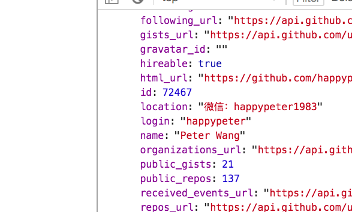

API 案例：请求 github
来一节案例课程，演练一下之前的 API 概念。
任务：拿到自己的 github 用户名
如果，作为普通用户，采用 UI 的形式，就简单了，直接访问 https://github.com/happypeter 就可以看到，我自己的 github 用户名是 happypeter 。
但是，如果用 API 的形式，要如何来操作呢？
API 文档是必须要读的
首先 API ，这里指的是网络 API ，后面我就都简称 API 了，是后端开发者开发的。所以具体的请求形式，作为前端开发者，我们是不知道的。但是，作为后端开发者，有义务给我们提供一个叫做 API 文档 的东西。例如，我们这里要想拿到 github 上的信息，就要读 https://developer.github.com/v3/ ，也就是 github 的 API 文档。
然后，就可以找到，请求用户名，需要的 HTTP 请求形式是
GET https://api.github.com/users/happypeter
负载数据呢？这个请求不需要。
发出 HTTP 请求
我们这里要请求的用户名，例如 happypeter ，这个数据在美国。如果我们自己机器上的数据，可能就是一个普通函数就能拿到。但是，千山万水之外的一个东西，想拿到，就要通过 HTTP 协议来进行通信。我们作为请求方，就要发出 HTTP 请求 。请求的目的地，已经有了，就是 API 文档上读出的 API 接口信息。另外一个要解决的问题，就是用什么工具来发出 HTTP 请求。
答案就是，用 HTTP 客户端 ，目前用到比较多的有 $.ajax() ，fetch ，axios 。但是最为流行的还是 axios ，所以我们这里也要用 axios 来发这个请求。
安装 axios
最专业的方式是用 npm/import 来进行安装导入。这个稍后再说。我们先来一种简单的形式，就是用 <script>来导入 axios 。
首先，我们去网上搜一下 axios cdn 。可以找回 axios 的在线托管版本。
<script src="https://cdn.bootcss.com/axios/0.18.0/axios.js"></script>
从 http://www.bootcdn.cn/axios/ 拷贝 script 标签。
//index.html
<html>
<head>
<script src="https://cdn.bootcss.com/axios/0.18.0/axios.js"></script>
</head>
<body>
</body>
</html>
创建 index.html ，里面把拷贝到的内容，粘贴到 head 标签中，这样，页面打开的时候，浏览器会自动下载，并且运行 axios ，也就相当于 axios 已经安装完毕。
用 axios 发请求
自己的 js 可以写到 html 页面中的 script 标签内，同时把这个标签紧贴 </body> 。
我们要发的请求方法是 GET ，要用的接口就是 axios.get() 。所以，这里 get() 就是一个 axios 的 API ，也就是之前我们提到的 普通 API 。但是，这个 API ，巧合就是用来发 HTTP 请求，请求 网络 API 的。
<script>
axios.get('https://api.github.com/users/happypeter').then( res =>{' '}
{console.log('My username:', res.data)}
)
</script>
浏览器中，打开 html ，就可以看到浏览器中端中，显示出了 Github 提供的信息了，其中就包括 login 用户名这一项。
